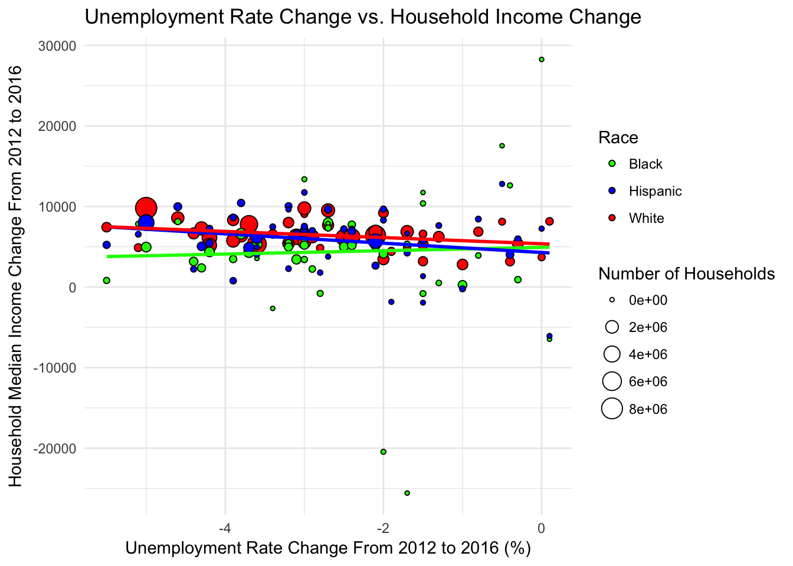

Race, Economic, and Electoral Outcomes in the United States
Brian Fry, Alan Chen, Michelle Choi
12/7/2017
Abstract
Our group’s final project examined relationships between race, income, unemployment, and electoral outcomes between 2012 and 2016 in the United States. We constructed a Shiny appication that explored initial relationships between the variables, then created more detailed visualizations exploring broad trends among seelected variables and selected relationships of interest. We found that a state’s median household income was significantly correlated with its electoral results, with more Democratic states having higher household income. This relationship held most strongly for white households. White and Hispanic households also experienced correlated growth in household income with partisan change towards the Democrat between 2012 and 2016, while black households experienced the opposite trend.
Introduction
In the aftermath of the 2016 presidential election and Donald Trump’s stunning upset over Hillary Clinton, the media postmortem was focused on pinning down an exact reason “why” that could explain Trump’s victory. Two competing explanations of Trump’s historic levels of support from white voters emerged, one focused on race and the other on economics. That is, had Trump ridden a “whitelash” of angry white voters against Obama’s racial legacy to office, or had he tapped into the economic anxieties of overlooked and neglected rural white voters? For context, see Mark Lilla’s Sunday essay in The New York Times two weeks after the election in which he explores the intersection of both explanations and Democrats’ role in shaping Trump’s victory: https://www.nytimes.com/2016/11/20/opinion/sunday/the-end-of-identity-liberalism.html
Our group’s final project examines relationships between race, economic outcomes, and electoral outcomes in the United States. Specifically, we are interested in examining correlations between statewaide unemployment, median income by state and race, and presidential election results for the years 2012 and 2016.
Our guiding research questions are:
- How is race related to economic outcomes like unemployment and income?
- Is electoral partisanship correlated with racial and economic outcomes broadly?
- How does the change in a state’s economic outcomes affect its electoral results between 2012 and 2016?
Data Description
We used three sources of data for our project:
- Statewide unemplyoment data from the Bureau of Labor Statistics: https://www.bls.gov/lau
- Household income data by state and race from the American Communities Survey by the Census Bureau: https://www.census.gov/programs-surveys/acs/
- Statewide 2012 and 2016 presidential election results from the US Election Atlas: https://uselectionatlas.org/
Since each of these files came in .csv formats, we found it easier to first arrange the data in Excel, then do light, residual cleaning in R.
Our data includes the statewide electoral margin for the presidential elections in 2016 and 2012, the statewide unemployment rates for the years 2016 and 2012, and median household income by state and racial group for the years 2016 and 2012.
Notation: Positive electoral margins indicate the Democrat received more votes. Negative electoral margins indicate the Republican received more votes. All changes in variables are 2016 values minus 2012 values.
library(tidyverse)
library(RColorBrewer)
library(ggparallel)
library(ggalluvial)
library(maps)
library(mapproj)
library(gridExtra)
stateData <- read.csv("stateData.csv",header=TRUE)
names(stateData)[1:5]<-c("State","unemployment2016","unemployment2012","margin2016","margin2012")
stateData<-mutate(stateData,unemploymentChange=unemployment2016-unemployment2012)
stateData<-mutate(stateData,marginChange=margin2016-margin2012)
stateData$Median.Income.Black.2012<-as.numeric(as.character(stateData$Median.Income.Black.2012))
save(stateData, file="stateData.RData")Graph Designs
Design Process
We began by coding our exploratory Shiny application in order to see what initial, interesting relationships we could discover within and between our variables. After we had identified several relationships we wanted to explore further, we decided on a two-fold approach: first graphing our variables independently to understand high-level trends between 2012 and 2016, then graphing selected relationships between them in order to understand the nuanced ways in which they were related. Finally, prompted by trends we noticed in our grouped scatterplot comparing electoral margin to racial income, we constructed two side-by-side plots of the United States with the states’ colors determined by two different variables for a visual comparison.
Summary Plots Showing the Change in our Variables
Alluvial Plot Showing Change in Swing States
This plot shows how the number of states that had close electoral margins grew from 2012 to 2016.
close <- 6
stateData <- mutate(stateData, close12=ifelse(margin2012 > close, "Heavily Democrat",
ifelse(margin2012 < -close, "Heavily Republican", "Close")))
stateData <- mutate(stateData, close16=ifelse(margin2016 > close, "Heavily Democrat",
ifelse(margin2016 < -close, "Heavily Republican", "Close")))
stateData$close12 <- factor(stateData$close12, c("Close","Heavily Democrat","Heavily Republican"))
stateData$close16 <- factor(stateData$close16, c("Close","Heavily Democrat","Heavily Republican"))
# Add region to data
northeast_states<- c("Connecticut", "Maine", "Massachusetts", "New Hampshire", "Rhode Island", "Vermont", "New Jersey", "New York", "Pennsylvania")
midwest_states <- c("Illinois", "Indiana", "Michigan", "Ohio", "Wisconsin", "Iowa", "Kansas", "Minnesota", "Missouri", "Nebraska", "North Dakota", "South Dakota")
south_states <- c("Delaware", "Florida", "Georgia", "Maryland", "North Carolina", "South Carolina", "Virginia", "District of Columbia", "West Virginia", "Alabama", "Kentucky", "Mississippi", "Tennessee", "Arkansas", "Louisiana", "Oklahoma", "Texas")
west_states <- c("Arizona", "Colorado", "Idaho", "Montana", "Nevada", "New Mexico", "Utah", "Wyoming", "Alaska", "California", "Hawaii", "Oregon", "Washington")
stateData <- mutate(stateData, region=ifelse(State %in% northeast_states, "Northeast",
ifelse(State %in% midwest_states, "Midwest",
ifelse(State %in% south_states, "South",
ifelse(State %in% west_states, "West","USA")))))
# Track states with close margins in 2012 to those in 2016
g1 <- ggplot(stateData,aes(axis1=close12, axis2=close16))+
geom_alluvium(aes(fill = region))+
geom_stratum()+
geom_label(stat="stratum",label.strata=TRUE)+
labs(title = "Shift in Swing State Status from 2012 to 2016, by Region")+
scale_x_continuous(breaks = 1:2, labels = c("2012", "2016")) +
theme_minimal() + theme(axis.text.y=element_blank())
g1Parallel Coordinate Plot Showing Change in Margin by State
marginChange <- select(stateData, "State", "margin2012", "margin2016", "region")
marginChange.g <- gather(marginChange, key, value, c(2:3))
ggplot(marginChange.g, aes(x=key, y=value,group=State))+geom_line(aes(color = value))+
scale_color_gradient2(name = "Electoral Margin, 2012", low = "red", mid = "gray", high = "blue")+theme_minimal()+
labs(title="Presidential Electoral Margin Shift from 2012 to 2016", x = "Year", y = "Margin")ggplot(marginChange.g, aes(x=key, y=value,group=State))+geom_line(aes(color = region))+theme_minimal()+
labs(title="Presidential Electoral Margin Shift from 2012 to 2016", x = "Year", y = "Margin")Parallel Coordinate Plot Showing Change in Median Income by State
#Shows changes in median income similarly
incomeChange <- select(stateData, "State", "Median.Income.All.2012", "Median.Income.All.2016", "region")
incomeChange.g <- gather(incomeChange, key, value, c(2:3))
ggplot(incomeChange.g, aes(x=key, y=value,group=State))+geom_line(aes(color = value))+
scale_color_gradient(name = "Median Income, 2012", low = "white", high = "darkgreen")+
theme_minimal()+
labs(title="Median Income Shift from 2012 to 2016", x = "Year", y = "Median Income, All Races")g2 <- ggplot(incomeChange.g, aes(x=key, y=value,group=State))+geom_line(aes(color = region))+
theme_minimal()+
labs(title="Median Income Shift from 2012 to 2016", x = "Year", y = "Median Income, All Races")
g2
Parallel Coordinate Plot Showing Change in Unemployment Rate by State
# Show change in unemployment in the same way
empChange <- select(stateData, "State", "unemployment2016", "unemployment2012", "region")
empChange.g <- gather(empChange, key, value, c(2:3))
ggplot(empChange.g, aes(x=key, y=value,group=State))+geom_line(aes(color = value))+
scale_color_gradient2(name = "Unemployment %, 2012", low = "white", high = "red")+
theme_minimal()+
labs(title="Unemployment Shift from 2012 to 2016", x = "Year", y = "Unemployment, All Races")ggplot(empChange.g, aes(x=key, y=value,group=State))+geom_line(aes(color = region))+
theme_minimal()+
labs(title="Unemployment Shift from 2012 to 2016", x = "Year", y = "Unemployment, All Races")
Boxplots Showing Absolute Median Income by Race in 2016 and Change in Median Income by Race between 2012 and 2016
stateData.boxplot <- stateData
stateData.boxplot<-mutate(stateData.boxplot, whiteDif=Median.Income.White.2016-Median.Income.White.2012)
stateData.boxplot<-mutate(stateData.boxplot, blackDif=Median.Income.Black.2016-Median.Income.Black.2012)
stateData.boxplot<-mutate(stateData.boxplot, hispanicDif=Median.Income.Hispanic.or.Latino.2016-Median.Income.Hispanic.or.Latino.2012)
g3 <- ggplot(stateData.boxplot) +
geom_boxplot(aes(x=1,y=Median.Income.White.2016),fill="red") +
geom_boxplot(aes(x=2,y=Median.Income.Black.2016),fill="green") +
geom_boxplot(aes(x=3,y=Median.Income.Hispanic.or.Latino.2016),fill="blue") +
scale_x_discrete(limits=c("White","Black","Hispanic")) +
labs(title="2016 Household Median Income By Race",y="Household Median Income",x="Race") +
theme_minimal()
g3
ggplot(stateData.boxplot) +
geom_boxplot(aes(x=1,y=whiteDif),fill="red") +
geom_boxplot(aes(x=2,y=blackDif),fill="green") +
geom_boxplot(aes(x=3,y=hispanicDif),fill="blue") +
scale_x_discrete(limits=c("White","Black","Hispanic")) +
labs(title="Change in Household Median Income By Race from 2016 to 2012",y="Change in Household Median Income",x="Race") +
theme_minimal()Relational Plots Between Median Income and Electoral Outcomes, Unemployment Rates
Grouped Scatterplot showing Electoral Margin vs. Racial Income
load("stateData.RData")
stateData.g <- gather(stateData, race, medianIncome, c(16,17,23))
stateData.g <- mutate(stateData.g, households = ifelse(race=="Median.Income.White.2016", Households.White,
ifelse(race=="Median.Income.Black.2016", Households.Black, Households.Hispanic.or.Latino)))
g4 <- ggplot(data=stateData.g) +
geom_point(aes(x=margin2016,y=medianIncome,size=households,group=race,fill=factor(race)),shape=21,color="black") +
geom_smooth(aes(x=margin2016,y=medianIncome,group=race,color=factor(race)),method="lm",se=F,formula=y~poly(x,1)) +
labs(title="State Electoral Margin vs. Household Income By Race",x="2016 Electoral Margin",y="Household Median Income") +
guides(size=guide_legend(title="Number of Households"), fill=guide_legend(title="Race")) +
scale_fill_manual(values=c("green","blue","red"),labels=c("Black","Hispanic","White")) +
scale_color_manual(values=c("green","blue","red"),guide=FALSE) +
theme_minimal()
g4
Change in Electoral Margin vs. Change in Racial Income
stateData.g <- mutate(stateData, whiteChange=Median.Income.White.2016-Median.Income.White.2012, blackChange=Median.Income.Black.2016-Median.Income.Black.2012, hispanicChange=Median.Income.Hispanic.or.Latino.2016-Median.Income.Hispanic.or.Latino.2012)
stateData.g <- gather(stateData.g, race, medianIncomeChange, c(34,35,36))
stateData.g <- mutate(stateData.g, households = ifelse(race=="whiteChange", Households.White,
ifelse(race=="blackChange", Households.Black, Households.Hispanic.or.Latino)))
g5 <- ggplot(data=stateData.g) +
geom_point(aes(x=marginChange,y=medianIncomeChange,size=households,group=race,fill=factor(race)),shape=21,color="black") +
geom_smooth(aes(x=marginChange,y=medianIncomeChange,group=race,color=factor(race)),method="lm",se=F,formula=y~poly(x,1)) +
labs(title="Electoral Margin Change vs. Household Income Change",x="Electoral Margin Change From 2012 to 2016",y="Household Median Income Change From 2012 to 2016") +
guides(size=guide_legend(title="Number of Households"), fill=guide_legend(title="Race")) +
scale_fill_manual(values=c("green","blue","red"),labels=c("Black","Hispanic","White")) +
scale_color_manual(values=c("green","blue","red"),guide=FALSE) +
theme_minimal()
g5
Unemployment Rate vs. Racial Income
stateData.g <- gather(stateData, race, medianIncome, c(16,17,23))
stateData.g <- mutate(stateData.g, households = ifelse(race=="Median.Income.White.2016", Households.White,
ifelse(race=="Median.Income.Black.2016", Households.Black, Households.Hispanic.or.Latino)))
ggplot(data=stateData.g) +
geom_point(aes(x=unemployment2016,y=medianIncome,size=households,group=race,fill=factor(race)),shape=21,color="black") +
geom_smooth(aes(x=unemployment2016,y=medianIncome,group=race,color=factor(race)),method="lm",se=F,formula=y~poly(x,1)) +
labs(title="Unemployment Rate vs. Household Income By Race",x="2016 Unemployment Rate (%)",y="Household Median Income") +
guides(size=guide_legend(title="Number of Households"), fill=guide_legend(title="Race")) +
scale_fill_manual(values=c("green","blue","red"),labels=c("Black","Hispanic","White")) +
scale_color_manual(values=c("green","blue","red"),guide=FALSE) +
theme_minimal()Change in Unemployment Rate vs. Change in Racial Income
stateData.g <- mutate(stateData, whiteChange=Median.Income.White.2016-Median.Income.White.2012, blackChange=Median.Income.Black.2016-Median.Income.Black.2012, hispanicChange=Median.Income.Hispanic.or.Latino.2016-Median.Income.Hispanic.or.Latino.2012)
stateData.g <- gather(stateData.g, race, medianIncomeChange, c(34,35,36))
stateData.g <- mutate(stateData.g, households = ifelse(race=="whiteChange", Households.White,
ifelse(race=="blackChange", Households.Black, Households.Hispanic.or.Latino)))
ggplot(data=stateData.g) +
geom_point(aes(x=unemploymentChange,y=medianIncomeChange,size=households,group=race,fill=factor(race)),shape=21,color="black") +
geom_smooth(aes(x=unemploymentChange,y=medianIncomeChange,group=race,color=factor(race)),method="lm",se=F,formula=y~poly(x,1)) +
labs(title="Unemployment Rate Change vs. Household Income Change",x="Unemployment Rate Change From 2012 to 2016 (%)",y="Household Median Income Change From 2012 to 2016") +
guides(size=guide_legend(title="Number of Households"), fill=guide_legend(title="Race")) +
scale_fill_manual(values=c("green","blue","red"),labels=c("Black","Hispanic","White")) +
scale_color_manual(values=c("green","blue","red"),guide=FALSE) +
theme_minimal()
Coordinate Plots of the United States Comparing White Houshold Income and 2016 Electoral Margin
These two plots help provide a visual comparison of the states with a high white median household income and states’ electoral margins. Both graphs are filled with a single gradient of color, which though unconventional for partisan electoral graphs, helps with side-by-side comparison and identfying commonalities.
all_states <- map_data("state")
stateData_temp <- stateData
names(stateData_temp)[1] <- "region"
stateData_temp[[1]]<-tolower(stateData_temp[[1]])
stateData_map <- merge(all_states, stateData_temp, by="region")
stateData_map <- stateData_map[order(stateData_map$order),]
rm(stateData_temp)
whiteincomePlot <- ggplot() +
geom_polygon(data=stateData_map,aes(x=long, y=lat, group = group, fill=Median.Income.White.2016),color="grey50") +
coord_map() +
labs(x="",y="",title="White Median Household Income") +
theme_classic() +
theme(axis.ticks.y = element_blank(),axis.text.y = element_blank(), axis.ticks.x = element_blank(),axis.text.x = element_blank()) +
scale_fill_gradient(name="Income",low="whitesmoke",high="darkgreen")
marginPlot <- ggplot() +
geom_polygon(data=stateData_map,aes(x=long, y=lat, group = group, fill=margin2016),color="grey50") +
coord_map() +
labs(x="",y="",title="2016 Electoral Margin") +
theme_classic() +
theme(axis.ticks.y = element_blank(),axis.text.y = element_blank(), axis.ticks.x = element_blank(),axis.text.x = element_blank()) +
scale_fill_gradient(name="Margin",low="whitesmoke",high="darkblue")
grid.arrange(whiteincomePlot,marginPlot)Workflow Description
We began by identifying the variables we were interested in comparing and finding datasets for those. Since our data came from three disparate sources, we decided to first organize the data in Excel before importing it for residual cleaning.
We then coded our data explorer Shiny application. For the Shiny application, since we were interested in showcasing two-variable relationships that we suspected were linearly correlated, we decided to use a scatterplot as the central graph type. From there, we gave users the ability to select different variables to graph against electoral results, as well as various customization options to help clarify and identify further trends in the data.
Finally, based on the initial trends we noticed from our Shiny application, we chose several visualizations to create that identified the trends (or lack thereof) in order to answer our initial research questions.
Final Analysis
Selected Visualizations
The following are our selected visualizations:
g1
g2g3g4g5grid.arrange(whiteincomePlot,marginPlot)
As a reminder, our research questions were:
- How is race related to economic outcomes like unemployment and income?
- Is electoral partisanship correlated with racial and economic outcomes broadly?
- How does the change in a state’s economic outcomes affect its electoral results between 2012 and 2016?
Our first two selected graphs are useful for understanding the change in presidential election results from 2012 to 2016 and the change in household income between the same years at a broad level. It is evident that the 2016 election swung more Republican than in 2012, with more Close states in 2012 becoming Heavily Republican than Heavily Democrat and more Heavily Democrat states than Heavily Republican ones becoming Close. It is also clear that nearly all states experienced increases median household income between 2012 and 2016.
The race of a household’s primary income-earner is heavily correlated with household median income. As can be seen from our boxplot graph of Median Household Income by Race in 2016 and from our scatterplot graph of Electoral Margin vs. Household Income by Race, white household income is consistently the highest across the 50 states, followed by Hispanic then black household income.
As our Shiny application shows, a state’s presidential electoral results are correlated with its median household income overall, with wealthier states being more Democratic than poorer ones. The scatterplot graph of Household Income by Race vs. Electoral Margin also shows that this trend holds across racial breakdowns. Interestingly, though median income increases for all races the more Democratic a state votes, it increases more per percentage point for white households.
Our scatterplot graph of the Change in Electoral Margin vs. change in Household Income by Race shows that while for white and Hispanic households, a state becoming more Democratic in 2016 as compared to 2012 was associated with an increase in median income. The opposite was true for black households, for whom a state becoming less Democratic (more Republican) was associated with an increase in median income, though this relationship may be dominated by a few influential outliers.
Because our results showed white household income being more strongly associated with partisan results, we created two maps of the United States, one colored by white household income and one colored by the 2016 election results. A visual comparison also confirms this trend, with the regions of the country with the wealthiest white populations also voting the most strongly for the Democratic presidential candidate.
In both our Shiny application comparing a state’s unemployment rate and changes therein to its electoral results and in our scatterplots breaking down the relationship between unemployment rate and household income by race, no significant relationships were discovered.